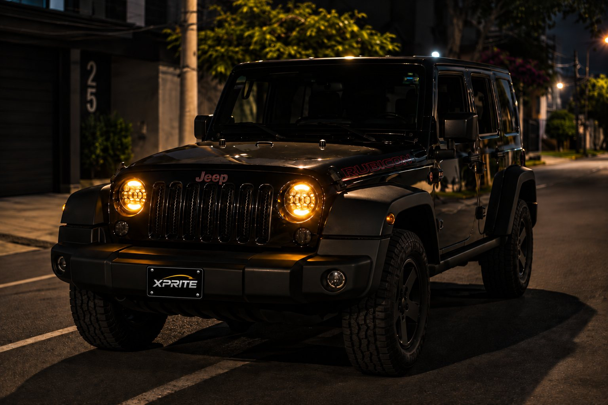
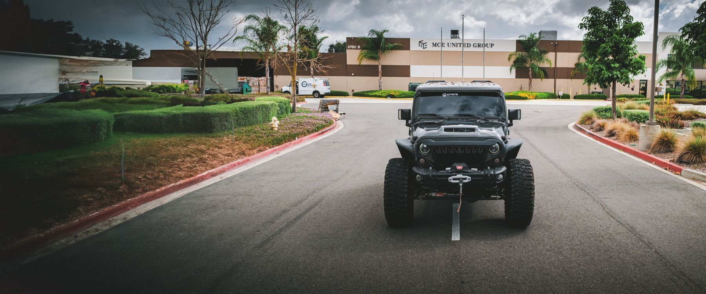
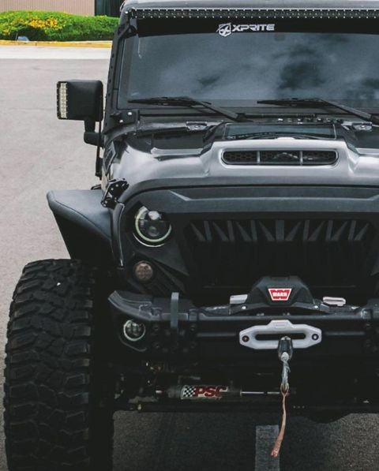
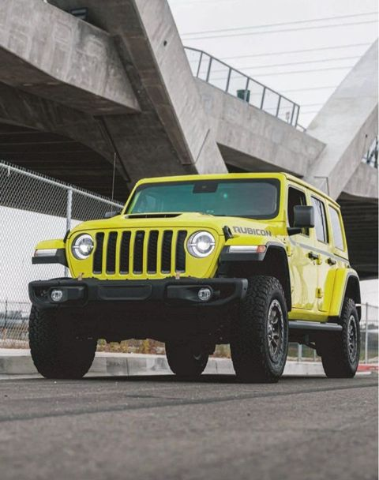
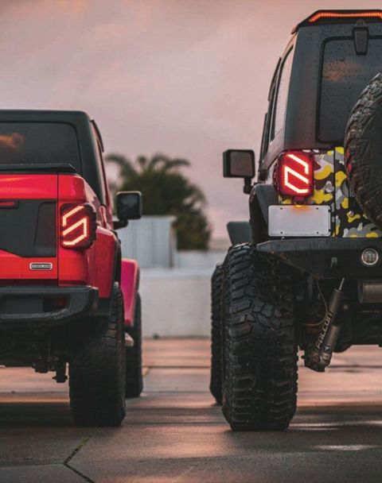
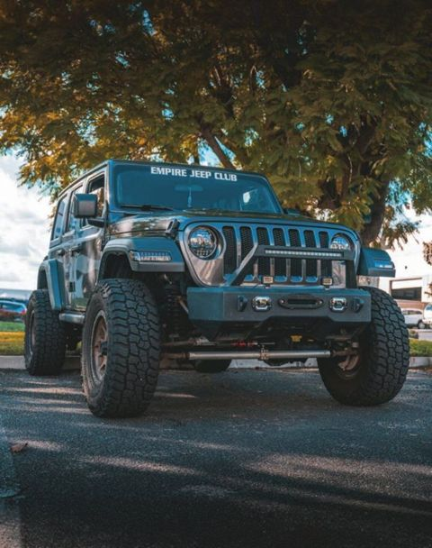
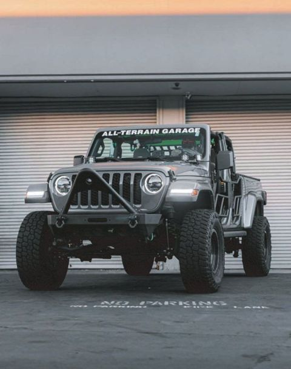

Jeepeto Parts · Lima
Tu Jeep.
Mejor equipado.
Luces LED y accesorios originales Xprite, traídos a pedido para tu Wrangler o Gladiator.
- Originales Xprite
- A pedido · 2 a 3 semanas
- Instalación desde S/ 80


Jeepeto Parts · Lima
Busca por tu Jeep.
Elige modelo, año y puertas. Te mostramos solo lo que le queda, y lo usamos en todas las secciones.
Explora por zona.
Elige qué parte de tu Jeep quieres mejorar.
Destacados.
Lo que más transforma un Jeep, en un vistazo.
Así se ven con Xprite





Fotos de referencia de Xprite.
Este es Jeepeto.
Wrangler Rubicon 2009. El Jeep que le da nombre a la tienda y donde probamos las luces y accesorios antes de recomendártelos.
Repuestos 100% originales Mopar
Traemos cualquier pieza original Mopar para tu Jeep. Solo envíanos el código de la pieza (número de parte Mopar) y te pasamos la cotización.
¿No tienes el código? Suele venir grabado o en una etiqueta en la pieza original. También puedes mandarnos el VIN de tu Jeep y una foto de la pieza.
Elige tu Jeep.
Filtra rápido por modelo o cambia tu Jeep cuando quieras.
¿Qué stop te conviene?
Cuatro estilos de stops LED para Wrangler JK, lado a lado.
Importante: estos stops usan el enchufe americano del JK. Algunos JK vendidos fuera de EE.UU. traen enchufe europeo. Antes de pedir, mándanos una foto del enchufe de tu stop y te confirmamos.
¿Por qué Xprite?
Cómo comprar
- Escríbenos por WhatsAppToca “Lo quiero” en el producto y te llega el mensaje listo.
- Confirmamos tu JeepRevisamos que el producto le quede a tu modelo y año.
- Separas con el 50%El resto lo pagas cuando el producto llega.
- Entrega o instalaciónTe lo entregamos o lo instalamos en Miraflores y alrededores.
Preguntas frecuentes.
¿Cómo sé si le queda a mi Jeep?
Cada producto dice con qué modelo y años es compatible. Igual, antes de pedir te confirmamos por WhatsApp con el modelo y año de tu Jeep.
¿Cuánto demora?
Entre 2 y 3 semanas aproximadamente, porque traemos cada pedido desde la tienda oficial de Xprite en EE.UU.
¿Cómo pago?
Con Yape, Plin o transferencia. Separas el pedido con el 50% y pagas el resto cuando llega.
¿Son originales?
Sí. Compramos directo en la tienda oficial de Xprite: productos nuevos y en su caja.
¿Tienen garantía?
Sí, 1 año contra defectos de fabricación. Si algo falla, escríbenos con fotos o un video de la falla y la boleta o comprobante. Nosotros gestionamos el cambio y pagamos el envío del reemplazo hasta Lima. Si es un defecto de fábrica, te respondemos nosotros, aunque el fabricante no apruebe el reclamo. El cambio demora lo mismo que un pedido nuevo (2 a 3 semanas). No cubre daños por golpes o accidentes, ni modificaciones hechas al producto. Esta garantía no reemplaza tus derechos como consumidor según la ley peruana.
¿Instalan?
Sí, en Miraflores y alrededores, desde S/ 80 según el producto. Probamos cada luz antes de entregarla.
¿Qué pasa si un producto está agotado?
Escríbenos igual: te avisamos cuando vuelva a estar disponible o te recomendamos una alternativa.
¿Traen repuestos Mopar?
Sí, solo originales y a pedido. Envíanos el código de la pieza (o el VIN y una foto) y te cotizamos.